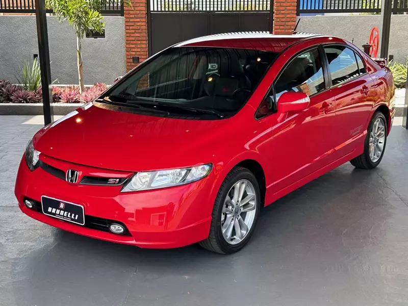

Quais os melhores carros da Honda? Os melhores carros da Honda são seus sedans: no segmento de médios, o Honda Civic e no mercado de sedans premium o Honda Accord, no mercado de esportivos também há o Honda Civic Si. City LX. E o primeiro carro da lista é o Honda City LX, que possui o melhor custo benefício entre todos os veículos comercializados pela marca. De fato, é o carro da Honda que mais vale a pena. Honda City Sedan É o modelo mais barato, mais simples e mais compacto dos quatro, ideal para quem busca um sedan econômico para uso diário e com bom desempenho. Disponível em diferentes versões (EX, EXL e Touring), dois pontos chamam a atenção no Honda City Sedan 2024: preço e consumo otimizado. ed.
Foto do colégio, vista de frente:
